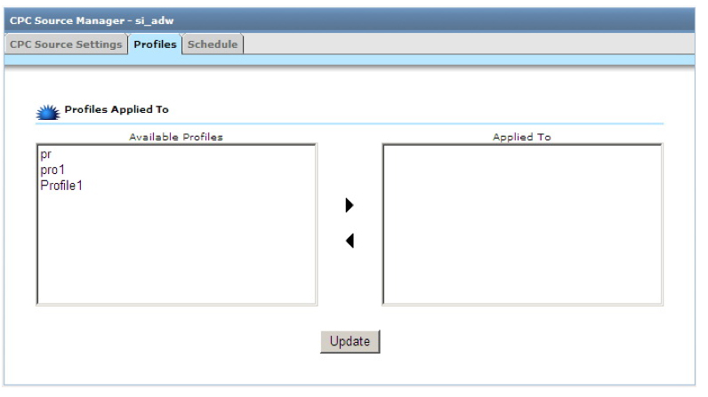

클릭당비용(CPC) 소스(Urchin 6.5+)
Urchin 6.5에서는 새로운 유형의 데이터 소스인 클릭당비용(CPC) 소스가 추가로 지원됩니다. 로그 소스를 사용할 때처럼 CPC 소스를 사용하면 외부 소스에서 CPC 캠페인 데이터를 자동 추출할 수 있습니다. 로그 소스 및 필터와 마찬가지로 기존 프로필에 CPC 소스를 링크함으로써 Urchin 보고서에 CPC 데이터가 자동으로 포함되도록 할 수 있습니다. CPC 소스는 Google 애드워즈에 대해서만 생성될 수 있습니다.
참고: 애드워즈 초보자용 계정에서는 CPC 소스를 사용할 수 없습니다. CPC 소스를 사용하려면 애드워즈 일반용 계정으로 업그레이드해야 합니다.
6.500에서 6.501로의 업그레이드 관련 중요사항: 6.500에서 6.501로 업그레이드하는 경우 기존 CPC 데이터를 수동으로 삭제해야 합니다. 이때 다음 디렉토리의 모든 내용을 삭제합니다.
<path_to_urchin_6500_installation>/data/cpc/... <path_to_urchin_6500_installation>/data/history/cpc/...
CPC 소스 관리자
CPC 소스 관리자 섹션은 구성 > Urchin 프로필 섹션에 있습니다(Urchin 6.5만 해당됨).

CPC 소스 관리자에서는 현재의 Urchin 인스턴스에 구성된 클릭당비용(CPC) 소스가 표시되며 관리자가 CPC 소스를 만들고 수정할 수 있도록 UI 컨트롤이 제공됩니다.
새 CPC 소스 만들기
새로운 CPC 소스를 추가하고 구성하려면 CPC 소스 관리자의 우측 상단에 표시된 '추가' 버튼을 클릭하십시오.

이렇게 하면 ‘CPC 소스 추가 마법사’가 나타나 CPC 소스 추가 및 구성 단계를 안내합니다.
마법사가 안내하는 첫 단계에서 다음 데이터를 입력합니다.
- 선택 계정 - 새로 추가된 CPC 소스가 연결될 계정을 지정합니다(데이터센터 모드만 해당).
- CPC 소스 이름 CPC 소스의 이름입니다.
- CPC 소스 유형:
- Google 애드워즈
- 이메일* - 액세스하려는 애드워즈 계정 또는 내 고객센터 계정의 로그인 이메일입니다.
- 비밀번호* 로그인 계정의 비밀번호입니다.
- 개발자 토큰 애드워즈 API 공식 개발자를 식별하는 고유 문자열입니다(선택사항). Urchin에서는 기본 개발자 토큰이 제공되므로 자체 개발자 토큰을 사용하지 않으려면 이 입력란을 공백으로 두십시오.
- 응용프로그램 토큰 - 애드워즈 API에 액세스할 때 사용되는 응용프로그램 토큰입니다. 개발자 토큰처럼 선택사항이므로 입력란을 공백으로 남겨둘 수 있습니다.
- 고객 이메일 내 고객센터의 경우 액세스할 고객 계정의 로그인 이메일입니다.
- 고객 ID 내 고객센터의 경우 액세스할 애드워즈 계정의 고객 ID(Google 애드워즈 화면 오른쪽 상단에 표시되는 123-456-7890 형식의 번호)로, 고객 이메일 대신 사용할 수 있습니다.
‘CPC 소스 테스트’ 버튼을 클릭하여 CPC 소스 설정이 올바르게 되었는지 확인할 수 있습니다.

'마침'버튼을 클릭하여 설정을 완료합니다.

CPC 소스 수정하기
CPC 소스를 추가한 후에는 설정을 수정하거나 CPC 소스를 삭제하거나 다운로드를 예약할 수 있습니다.

기존 CPC 소스 설정을 수정하려면 해당 CPC 소스 옆의 '수정' 버튼을 클릭합니다.

애드워즈 계정에 대한 로그인 설정을 수정하거나 CPC 소스의 다운로드를 사용 또는 사용중지할 수 있습니다. 참고: 보고서 다운로드를 사용중지해도 다운로드된 기존의 보고서는 CPC 소스가 연결된 프로필에서 계속 사용됩니다.
'프로필' 탭에서 하나 이상의 기존 프로필에 CPC 소스를 연결할 수 있습니다. CPC 소스를 연결할 수 있는 프로필은 현 Urchin 계정으로 제한됩니다. 연결된 CPC 소스의 CPC 데이터가 프로필 보고서에 표시됩니다.

CPC 소스 일정 예약하기
CPC 소스 수정 화면의 예약 탭에서 다음과 같은 CPC 소스 다운로드 설정을 지정할 수 있습니다.
- 예약 다운로드 간격 CPC 다운로드는 두 단계로 이루어집니다. 첫 번째 단계에서는 CPC 인증서를 확인한 후 보고서에 대한 요청을 CPC 서버로 전달합니다. 두 번째 단계에서는 보고서가 작성될 때까지 주기적으로 보고서 작성 상태를 확인합니다. 보고서 다운로드가 완료되어야 두 번째 단계가 끝납니다. 보고서가 서버에 저장될 때까지 일정 시간이 소요되며 이는 계정의 캠페인 수, 검색 데이터의 양, 서버의 작업 부하 등에 따라 달라집니다. 이 시간에 따라 보고서 요청 후 Urchin에서 보고서의 사용 가능 여부를 확인하기 시작하는 시점이 결정됩니다. 클릭 트래픽이 많이 발생하는 대형 계정에서는 확인 간격을 길게 지정하는 것이 좋습니다.
- 다운로드 - 시간 CPC 소스에 대한 업데이트된 보고서를 다운로드할 시간을 지정합니다. 중요: CPC 데이터는 시간 단위가 아닌 일 단위로 추출되므로 애드워즈 계정에 지정된 시간대에서 만 하루가 지나고 최소 2시간이 더 지난 뒤에 다운로드할 것을 권장합니다. 이렇게 하면 원하는 날짜의 모든 CPC 데이터를 애드워즈 서버에서 볼 수 있습니다. CPC 소스가 연결된 프로필이 CPC 데이터가 다운로드된 후 처리되도록 예약하면 보고서에 최신 CPC 데이터가 기록됩니다.
글로벌 설정 화면의 CPC 소스 업데이트 탭에서 기본 글로벌 CPC 소스 다운로드 설정을 지정할 수 있습니다.